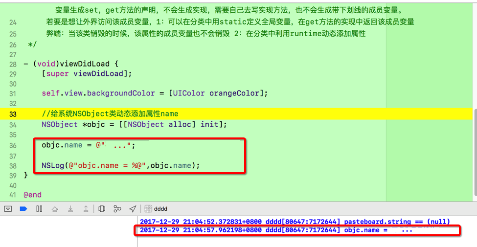

1.runtime：动态添加属性:什么时候需要动态添加属性;
2.开发场景：给系统的类添加属性的时候,可以使用runtime动态添加属性方法;
3.本质:动态添加属性,就是让某个属性与对象产生关联。runtime一般都是针对系统的类;
4.在分类中利用runtime动态添加属性;

1.控制器代码:
// Created by on 2017/12/29.
// Copyright © 2017年 wangerk. All rights reserved.
//
#import "SHAddAttributesViewController.h"
@interface SHAddAttributesViewController ()
@end
@implementation SHAddAttributesViewController
- (void)viewDidLoad {
[super viewDidLoad];
self.view.backgroundColor = [UIColor orangeColor];
//给系统NSObject类动态添加属性name
NSObject *objc = [[NSObject alloc] init];
objc.name = @"123";
NSLog(@"objc.name = %@",objc.name);
}
@end
2.分类代码
// Created by on 2017/12/29.
// Copyright © 2017年 wangerk. All rights reserved.
//
#import "NSObject+Property.h"
#import <objc/message.h>
// 定义关联的key
static const char *key = "name";
@implementation NSObject (Property)
- (void)setName:(NSString *)name{
// 让这个字符串与当前对象产生联系
// _name = name;
// object:给哪个对象添加属性
// key:属性名称
// value:属性值
// policy:保存策略
objc_setAssociatedObject(self, key, name, OBJC_ASSOCIATION_RETAIN_NONATOMIC);
//objc_setAssociatedObject(self, @"name", name, OBJC_ASSOCIATION_RETAIN_NONATOMIC);
}
- (NSString *)name{
// 根据关联的key，获取关联的值。
return objc_getAssociatedObject(self, key);
//return objc_getAssociatedObject(self, @"name");
}
@end